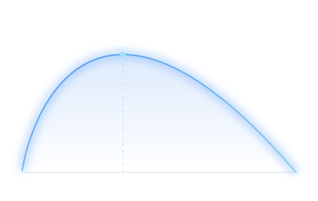
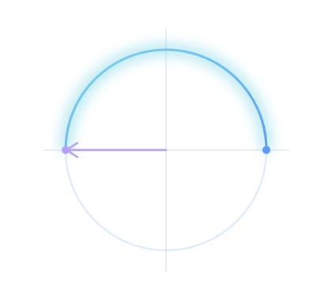
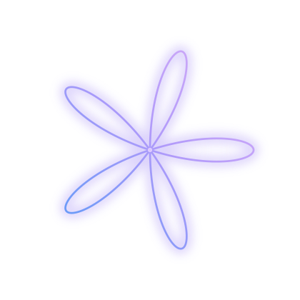
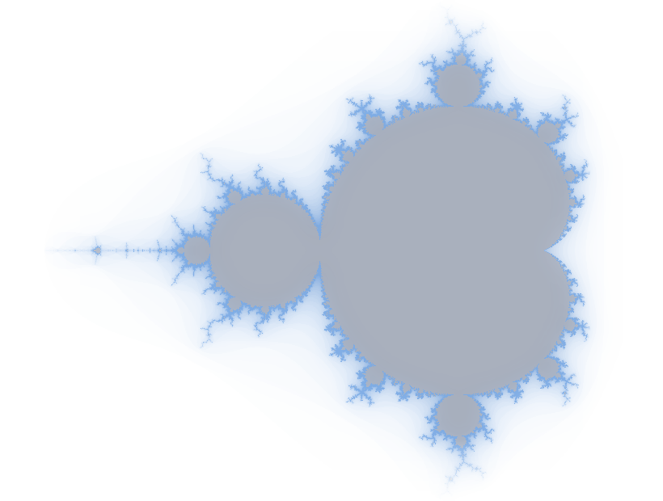

P(x) = −x ln x
1/e ≈ 36.8%

e
iπ
+ 1 = 0

r = cos(5θ)

z
n+1
= z
n
2
+ c
Xibin Li
AI Engineer
Project Alpha
An intelligent system for natural language understanding and generation.
Project Beta
Real-time data pipeline for ML model training and inference.
Project Gamma
Computer vision toolkit for image recognition and object detection.
Project Delta
Conversational AI assistant with multi-turn dialogue capabilities.